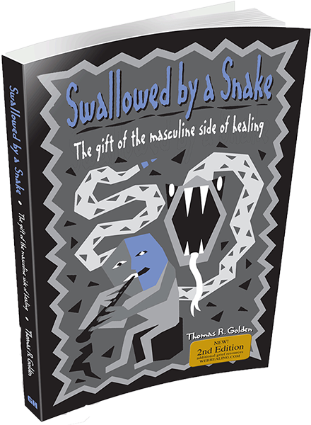

 Swallowed by a Snake: The Gift of the Masculine Side of Healing
Discover Healing Through the Wisdom of “Swallowed by a Snake” Swallowed by a Snake: The Gift of the Masculine Side of Healing offers a profound exploration of grief and recovery from a unique, male perspective. This groundbreaking book bridges cultural traditions, modern psychology, and personal anecdotes to illuminate the distinct ways men process loss and find healing. Golden’s compassionate guidance reveals how activities, storytelling, and action-oriented grieving can provide men with transformative paths to recovery, offering tools that resonate with their natural tendencies.Whether you're supporting a grieving loved one or seeking solace yourself, this book breaks stereotypes about masculinity and grief, showing that healing is deeply personal and beautifully diverse. With its wisdom and actionable insights, Swallowed by a Snake empowers readers to honor both the pain of loss and the resilience of the human spirit. A must-read for anyone who seeks to understand and embrace the journey of grief.
 The Way Men Heal
The Way Men Heal
Unlock the Secrets of How Men Heal in Tom Golden’s Transformative BookIn The Way Men Heal, Tom Golden sheds light on the often-overlooked ways men navigate grief and emotional healing. Drawing on decades of experience as a therapist, Golden explores the action-oriented and solution-focused methods men naturally use to process pain. This book challenges stereotypes, offering an empowering perspective that celebrates men’s unique strengths rather than pathologizing their differences.Through compelling stories and practical insights, Golden illustrates how activities, quiet reflection, and creating a legacy can help men express and transform their grief. Whether you're a man seeking validation in your journey or someone trying to support a grieving man, The Way Men Heal provides a fresh understanding of masculine resilience and growth.Compassionate, insightful, and inspiring, this book is an essential guide for anyone wanting to embrace and honor the powerful ways men find their way back to wholeness after loss. Helping Mothers Be Closer To Their Sons
Helping Mothers Be Closer To Their Sons
Foster Stronger Bonds with Your Son through Tom Golden’s Expert GuidanceIn Helping Mothers Be Closer to Their Sons, Tom Golden offers invaluable insights into the unique emotional worlds of boys and how mothers can build meaningful connections with them. Drawing on his expertise as a therapist, Golden reveals how boys process emotions differently, often through action and subtle expressions, and provides strategies for mothers to bridge the gap between their nurturing instincts and their sons' distinctive needs.Through relatable stories, practical tips, and compassionate advice, this book empowers mothers to better understand their sons’ behaviors, foster open communication, and support their emotional growth without imposing societal stereotypes. Golden's approach highlights the importance of respecting boys’ individuality while creating a safe space for them to thrive emotionally and relationally.Whether you’re raising a young boy or navigating the teenage years, Helping Mothers Be Closer to Their Sons is an essential guide for building lasting and loving relationships.